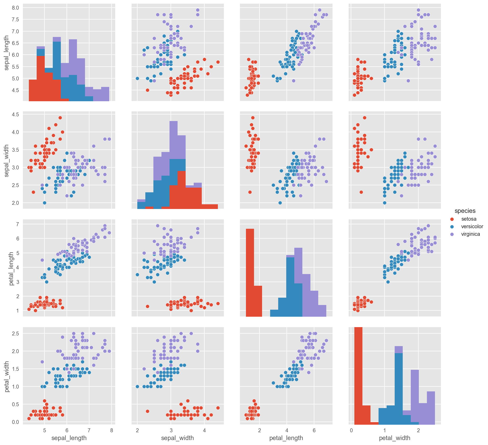
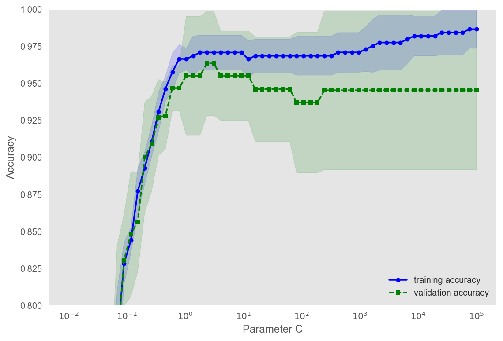
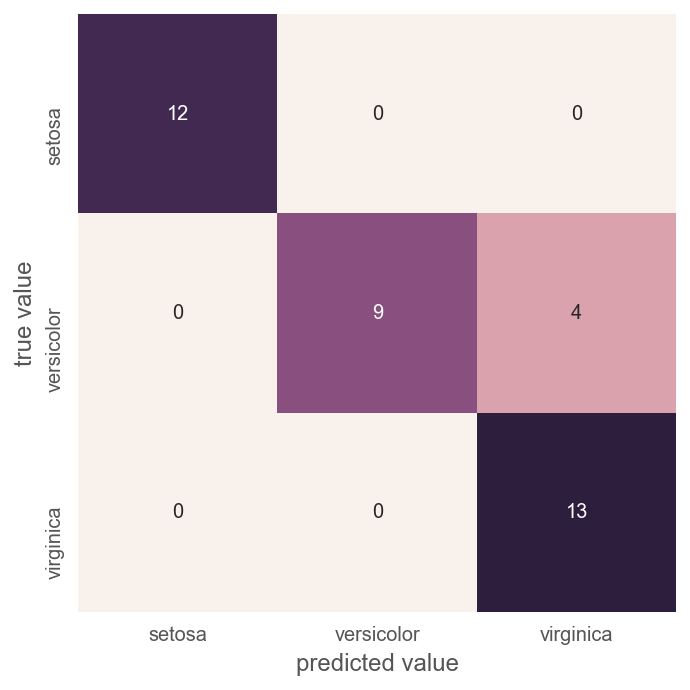

Table of Contents¶
1 数据预处理
1.1 代码环境配置
1.2 读取数据
1.3 数据清洗
1.3.1 检查缺失值
1.3.2 数据统计
1.3.3 数据初步可视化
1.3.4 数据转换
2 模型调用
2.1 默认参数的精度
2.2 搜索超参数
2.3 更小范围内的网格搜索
3 精度评价
3.1 精度
3.2 混淆矩阵
数据预处理¶
代码环境配置¶
图形行内显示，显示为矢量格式：
In [1]:
%pylab inline
%config InlineBackend.figure_format = 'retina'
Populating the interactive namespace from numpy and matplotlib
导入所需要的工具：
In [2]:
import pandas as pd
import seaborn as sns
import matplotlib as mpl
import matplotlib.pyplot as plt
mpl.style.use('ggplot')
如果没有安装seaborn，使用以下命令安装：
conda install seaborn
读取数据¶
从 seaborn 模块中加载 Iris 数据集：
In [3]:
iris = sns.load_dataset('iris')
iris.head()
Out[3]:
| sepal_length | sepal_width | petal_length | petal_width | species | |
|---|---|---|---|---|---|
| 0 | 5.1 | 3.5 | 1.4 | 0.2 | setosa |
| 1 | 4.9 | 3.0 | 1.4 | 0.2 | setosa |
| 2 | 4.7 | 3.2 | 1.3 | 0.2 | setosa |
| 3 | 4.6 | 3.1 | 1.5 | 0.2 | setosa |
| 4 | 5.0 | 3.6 | 1.4 | 0.2 | setosa |
sklearn 本身也是自带 iris 数据集的，也可以使用 sklearn 自带的 Iris 数据集：
from sklearn.datasets import load_iris
iris = load_iris()
X = iris.data
y = iris.target
数据清洗¶
检查缺失值¶
查看是否含有缺失值：
In [4]:
iris.isnull().sum()
Out[4]:
sepal_length 0
sepal_width 0
petal_length 0
petal_width 0
species 0
dtype: int64
数据统计¶
总览特征数据，查看统计特征：
In [5]:
iris.describe()
Out[5]:
| sepal_length | sepal_width | petal_length | petal_width | |
|---|---|---|---|---|
| count | 150.000000 | 150.000000 | 150.000000 | 150.000000 |
| mean | 5.843333 | 3.057333 | 3.758000 | 1.199333 |
| std | 0.828066 | 0.435866 | 1.765298 | 0.762238 |
| min | 4.300000 | 2.000000 | 1.000000 | 0.100000 |
| 25% | 5.100000 | 2.800000 | 1.600000 | 0.300000 |
| 50% | 5.800000 | 3.000000 | 4.350000 | 1.300000 |
| 75% | 6.400000 | 3.300000 | 5.100000 | 1.800000 |
| max | 7.900000 | 4.400000 | 6.900000 | 2.500000 |
总览类别数据，看一下一共有多少个类别，每个类别都包含多少个数据：
In [6]:
iris["species"].value_counts()
Out[6]:
setosa 50
virginica 50
versicolor 50
Name: species, dtype: int64
各个类别均匀分布。
数据初步可视化¶
根据类别，特征两两组合在特征空间可视化：
In [7]:
sns.pairplot(iris, hue="species", size=3)
Out[7]:
<seaborn.axisgrid.PairGrid at 0x112130eb8>

对角线上的直方图是单独一种特征下的频率分布。从特征两两组合的图中，可以看出 Iris-setosa 这个种类的花（红色）可以被任何一种的特征组合分离出来。
数据转换¶
分别读取为输入数据和类别数据：
In [8]:
from sklearn.datasets import load_iris
iris = load_iris()
X_iris = iris.data
y_iris = iris.target
模型调用¶
使用很小的一部分数据来检验数据是否正确、模型是否正确运行：
In [9]:
from sklearn.model_selection import train_test_split
from sklearn.linear_model import LogisticRegression
from sklearn.metrics import accuracy_score
from ipywidgets import interact,interact_manual
In [10]:
from ipywidgets import interact_manual
@interact_manual
def sanity_check(train_size: (0, 1, 0.05)=0.04):
X_train, X_test, y_train, y_test = train_test_split(
X_iris,
y_iris,
train_size=train_size,
random_state=0,
stratify=y_iris)
model = LogisticRegression()
model.fit(X_train, y_train)
accuracy = model.score(X_train, y_train)
print(y_train)
print('使用比例为{0:.2}的'\
'数据作为训练数据，正确率为{1:.2f}'.format(train_size, accuracy))
[2 2 0 0 1 1 2]
使用比例为0.05的数据作为训练数据，正确率为0.71
默认参数的精度¶
使用 50% 的数据作为训练数据, 25%的数据作为验证数据, 25%的数据作为测试数据：
In [11]:
X_train, X_test, y_train, y_test = train_test_split(
X_iris,
y_iris,
train_size=0.75,
random_state= 42,
stratify=y_iris)
In [12]:
X_train, X_valid, y_train, y_valid = train_test_split(
X_train,
y_train,
train_size=0.66,
random_state= 0,
stratify=y_train)
调用默认参数进行分类：
In [13]:
model = LogisticRegression()
model.fit(X_train, y_train)
Out[13]:
LogisticRegression(C=1.0, class_weight=None, dual=False, fit_intercept=True,
intercept_scaling=1, max_iter=100, multi_class='ovr', n_jobs=1,
penalty='l2', random_state=None, solver='liblinear', tol=0.0001,
verbose=0, warm_start=False)
In [14]:
model.score(X_train, y_train)
Out[14]:
0.9726027397260274
In [15]:
model.score(X_valid, y_valid)
Out[15]:
0.94871794871794868
搜索超参数¶
L2 penalized logistic regression
\[\underset{w, c}{min\,} \frac{1}{2}w^T w + C \sum_{i=1}^n \log(\exp(- y_i (X_i^T w + c)) + 1) .\]
holdout method 进行超参数搜索：
In [16]:
X_train, X_test, y_train, y_test = train_test_split(
X_iris,
y_iris,
train_size=0.75,
random_state= 42,
stratify=y_iris)
也可以使用 sklearn.linear_model.LogisticRegressionCV ，也可以用
validation_curve 来获取一系列的精度值：
In [17]:
from sklearn.model_selection import validation_curve
model = LogisticRegression()
param_range = np.logspace(-2, 5, 60)
train_scores, test_scores = validation_curve(
estimator=model,
X=X_train,
y=y_train,
param_name='C',
param_range=param_range,
cv=5)
train_mean = np.mean(train_scores, axis=1)
train_std = np.std(train_scores, axis=1)
test_mean = np.mean(test_scores, axis=1)
test_std = np.std(test_scores, axis=1)
plt.plot(
param_range,
train_mean,
color='blue',
marker='o',
markersize=5,
label='training accuracy')
plt.fill_between(
param_range,
train_mean + train_std,
train_mean - train_std,
alpha=0.15,
color='blue')
plt.plot(
param_range,
test_mean,
color='green',
linestyle='--',
marker='s',
markersize=5,
label='validation accuracy')
plt.fill_between(
param_range,
test_mean + test_std,
test_mean - test_std,
alpha=0.15,
color='green')
plt.grid()
plt.xscale('log')
plt.legend(loc='lower right')
plt.xlabel('Parameter C')
plt.ylabel('Accuracy')
plt.ylim([0.8, 1.0])
plt.tight_layout()

可以根据图形曲线进一步更小范围的精确搜索。
更小范围内的网格搜索¶
In [18]:
from sklearn.model_selection import GridSearchCV
param_grid = {'C': np.arange(0.1,10,0.1),
'penalty':['l2','l1']
}
grid = GridSearchCV(LogisticRegression(), param_grid, cv=5)
In [19]:
grid.fit(X_train,y_train);
In [20]:
grid.best_params_
Out[20]:
{'C': 0.90000000000000002, 'penalty': 'l2'}
In [21]:
grid.best_score_
Out[21]:
0.9642857142857143
In [22]:
model = grid.best_estimator_
精度评价¶
精度¶
In [23]:
y_model = model.predict(X_test)
accuracy_score(y_test, y_model)
Out[23]:
0.89473684210526316
混淆矩阵¶
In [24]:
from sklearn.metrics import confusion_matrix
mat = confusion_matrix(y_test, y_model)
sns.heatmap(mat, square=True, annot=True,fmt='d', cbar=False, xticklabels=iris.target_names, yticklabels=iris.target_names)
plt.xlabel('predicted value')
plt.ylabel('true value');
/Users/yangnaisen/anaconda/lib/python3.6/site-packages/seaborn/matrix.py:143: FutureWarning: elementwise comparison failed; returning scalar instead, but in the future will perform elementwise comparison
if xticklabels == []:
/Users/yangnaisen/anaconda/lib/python3.6/site-packages/seaborn/matrix.py:151: FutureWarning: elementwise comparison failed; returning scalar instead, but in the future will perform elementwise comparison
if yticklabels == []:

In [ ]: